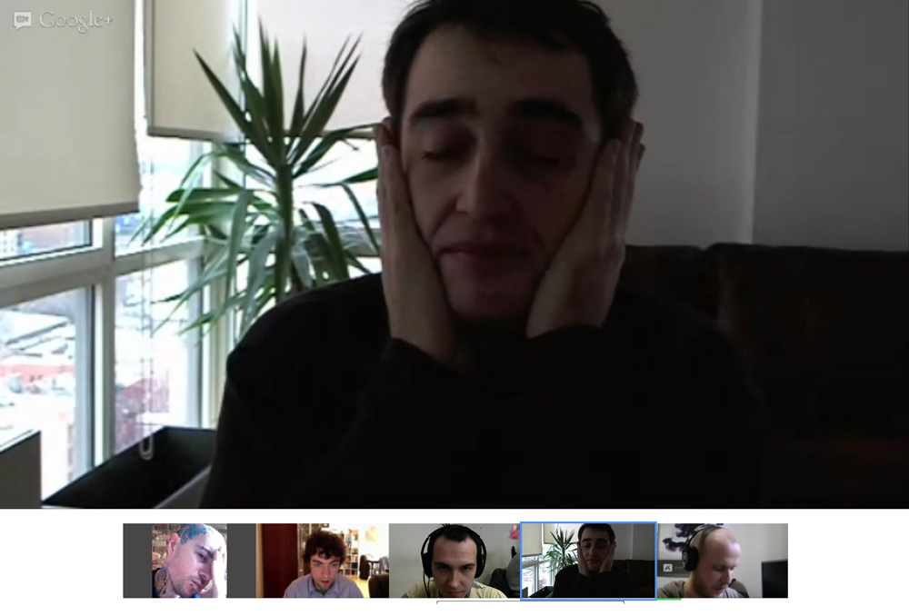
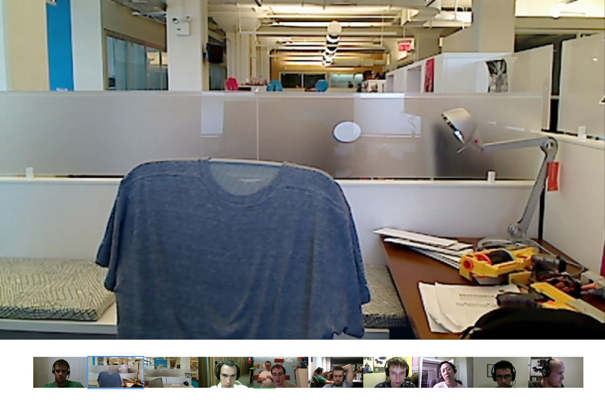
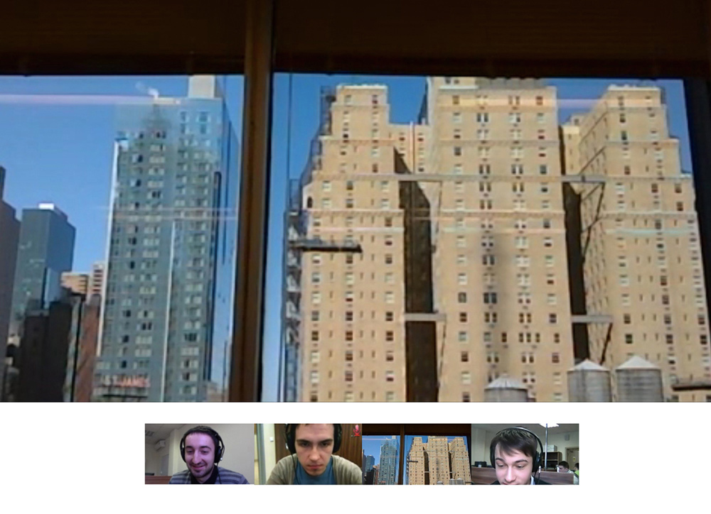
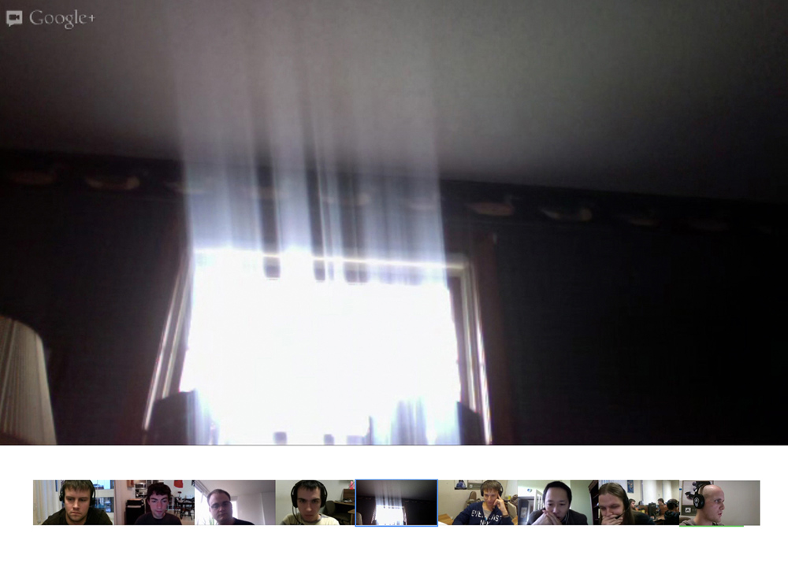
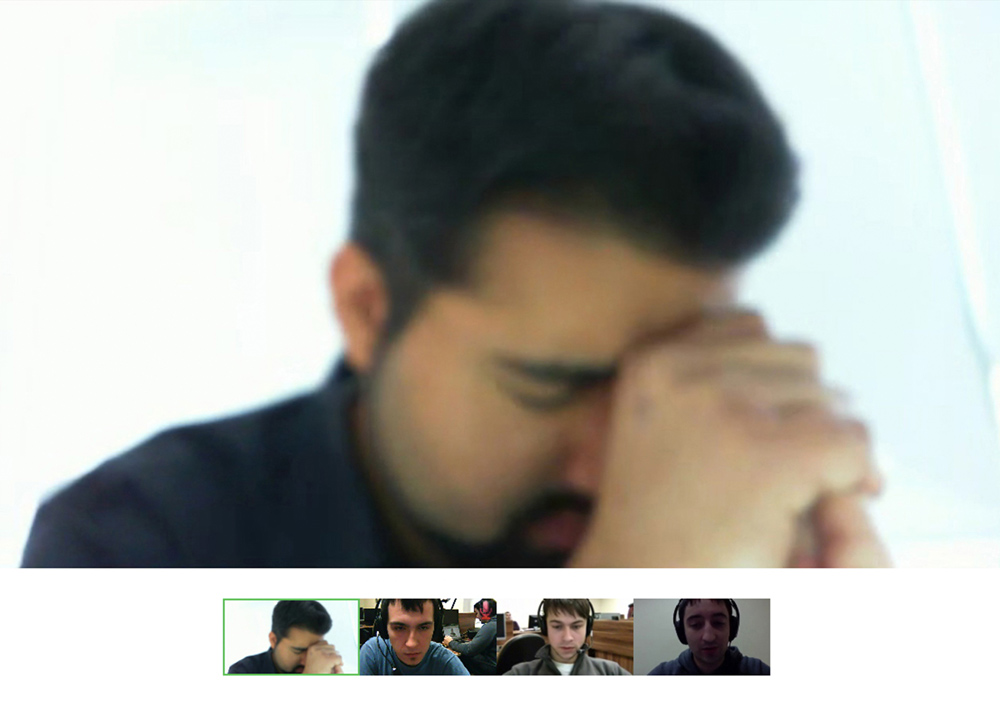

Некоторые профессии порой вызывают чувство, что мы могли бы спокойно обойтись и без них, потому что главная причина их существования в чрезмерном потреблении. Идея основного дохода и новая форма лени — прокрастинация — симптомы одного и того же феномена: убивания времени работой, которая сама по себе не имеет смысла.
Называть какого-либо автора ясновидящим или пророком — довольно распространённое явление. Но важно понимать, что пророком можно стать, только когда сбудется то, о чём шла речь. Один отрывок из книги Ницше «Так говорил Заратустра» (1883–1885) с подзаголовком «Книга для всех и ни для кого» как раз называют пророческим. Даже такие разные философы, как Славой Жижек и Конрад Лиссманн солидарны в том, что предсказание Ницше уместно для описания нынешней ситуации. Отрывок звучит так:
«Счастье найдено нами», — говорят последние люди, и моргают.
Они покинули страны, где было холодно жить: ибо им необходимо тепло. Также любят они соседа и жмутся к нему: ибо им необходимо тепло.
Захворать или быть недоверчивым считается у них грехом: ибо ходят они осмотрительно. Одни безумцы ещё спотыкаются о камни или о людей!
От времени до времени немного яду: это вызывает приятные сны. А в конце побольше яду, чтобы приятно умереть.
Они ещё трудятся, ибо труд — развлечение. Но они заботятся, чтобы развлечение не утомляло их.
Не будет более ни бедных, ни богатых: то и другое слишком хлопотно. И кто захотел бы ещё управлять? И кто повиноваться? То и другое слишком хлопотно.
Нет пастуха, одно лишь стадо! Каждый желает равенства, все равны: кто чувствует иначе, тот добровольно идёт в сумасшедший дом.
«Прежде весь мир был сумасшедший», — говорят самые умные из них, и моргают.
Все умны и знают всё, что было; так что можно смеяться без конца. Они ещё ссорятся, но скоро мирятся — иначе это расстраивало бы желудок.
У них есть своё удовольствьице для дня и своё удовольствьице для ночи; но здоровье — выше всего.
«Счастье найдено нами», — говорят последние люди, и моргают».
Современный Запад действительно во многом напоминает анклав последних людей. А как показывает нам фильм Альфонса Куарона «Дитя человеческое», быть последними людьми — значит быть людьми лишними.
Рассеять скуку
Даниэль Галеви в своей книге «История четырёх лет 1997–2001» (Histoire de quatre ans 1997 –2001, 1903) описал мир, где социализм и передовые технологии позволили сократить рабочий день на 2 часа, а «использование свободного времени стало самым актуальным социальным вопросом». И вопросом острым, потому что употребление наркотиков и сексуальные удовольствия приводят людей в психиатрические больницы, а жители Запада умирают от неизвестной эпидемии. В какой-то степени это может напомнить мир, в котором мы живём. Галеви был ровесником и другом Марселя Пруста, и в ту пору, когда он писал своё произведение, считалось, что свободное время является проблемой привилегированных слоёв. Следует подчеркнуть, что слово «проблема» использовано намеренно. Большинство из тех, у кого были не только время и возможности, но и надлежащее образование, чтобы самореализоваться различными способами, самостоятельно развиваться или вместе с другими создавать политическую жизнь своей страны, никогда не делали этого. Они лишь старались избежать скуки с помощью так называемых «хобби», общественной жизни, искусства или распутства.

С введением 40-часовой рабочей недели, оплачиваемого отпуска и выходных, когда к свободному воскресенью прибавилась свободная суббота, — одним словом, с демократизацией свободного времени появилась необходимость приспособить к нему и массы, что стало проблемой. Реакцией на демократизацию свободного времени стала демократизация культуры. Потребительская культура ни в коем случае не была планом сильнейших для удержания народа от мыслей о народной власти, а была ответом на историческое беспрецедентное увеличение свободного времени, которое необходимо заполнить. Многие люди, независимо от того, идёт речь об автомеханике или герцоге де Германте, из-за избытка свободного времени начинают ощущать скуку, которую нужно как-то побороть.
Между свободным временем и временем для самореализации нельзя поставить знак ровно
Телевидение, жизнь, проживаемая онлайн, гонка за знаменитостями, наркотики и алкоголь — всё это должно предотвратить скуку, избавить нас от груза свободных часов. Да, можно сказать, что каждая попытка занять свои мысли (и тело) может оказаться неизбежным экзистенциальным вопросом, так как любое занятие по сути стремление избежать осознания границы онтологического страха, отсутствия смысла жизни в мире без Бога и неизбежности собственной смерти. Если абстрагироваться от философской стороны вопроса свободного времени, то всё равно остаётся та заурядная действительность, где для большинства первостепенной проблемой является не получить больше времени, хотя мы часто и думаем об этом, а как-нибудь убить то, которое уже есть. Каждый может считать свою работу самой глупой на свете, пусть и не самой изнуряющей, но для многих это не значит, что в случае большей свободы они начнут заниматься тем, чему в мыслях посвящают себя. Вместо того, чтобы скрещивать пуделей с волкодавами или летать на воздушном шаре, они лучше проведут несколько часов перед телевизором. Образ американской домохозяйки 50-х, которая отправляет детей в школу, выполняет все дела по хозяйству с помощью современной техники, но в конце концов из-за недостатка конструктивной деятельности приходит к алкоголизму или фрустрирующим занятиям вроде флористики, во многом соответствует образу жизни большинства людей на Западе. Неприятно признавать, но между свободным временем и временем для самореализации нельзя поставить знак ровно. Свободное время сегодня — это скорее время, когда мы делаем то, что при других обстоятельствах делать бы не стали.
Чем меньше производство,
тем лучше результат
Парадоксально, но один из способов борьбы с чрезмерным количеством свободного времени — это работа. Но работа не в качестве производства ценностей, а как профессиональная трудовая деятельность, обязательная для каждого человека. 70% при этом заняты в третичном секторе, то есть сфере услуг. Это тысячи работников, которые ассистируют менеджерам: раздают листовки на улицах, работают за кассовыми аппаратами, в барах, дополняют стеллажи в супермаркетах или являются программистами в офисах открытого типа. И, конечно, те, кто променял своё отупляющее классическое рабочее место на фриланс, потому что видел в нём возможность для самореализации и огромный потенциал, но теперь жалуется на отсутствие трудовых выгод и должен сам оплачивать медицинскую страховку. Подобный тип работы, восхваляемый правыми политиками и работодателями, обесценивает годы борьбы рабочего класса: того класса, чья сила — а впрочем, и ожидания, связанные с его универсальным характером, — заключались в производстве продукта, стоимость которого равнялась затраченным материалам и работе. Трудовая теория стоимости подразумевает осознание тела как желающего удовольствия или добра. Но в результате высокой производительности стоимость продукта соответствует затраченному труду, но не потраченному времени.

Такая действительность и в общем тема бесполезности работы в постиндустриальном мире прекрасно передана в фильме «Офисное пространство» (1999). Главный герой Питер Гиббонс, которого врач случайно не вывел из гипнотического транса, перестаёт поддаваться правилам и начинает вести себя честно и открыто. В одной из сцен Питер признаётся консультанту, занятому улучшением эффективности фирмы, где сам Питер и работает: «Обычно я опаздываю минут на 15. Я иду через боковую дверь, чтобы меня не заметил Ламберг [шеф], ха ха, а... хм... Затем я отключаюсь где-то на час». Консультант: «Отключаетесь?» — «Да, просто смотрю на свой стол, но это выглядит так, как будто я работаю. То же самое я делаю и после обеда. Я как-то подсчитал, что за неделю я трачу на работу минут 15». Герой, который перед своим гипнопрозрением вынужден был ходить на работу даже в выходные без сверхурочной оплаты, стал продвигаться к сути вещей. Призыв проводить на работе больше времени с целью повышения производительности лишь создаёт пространство для манипуляций над рабочим, чтобы занять как можно больше времени трудом, хотя эффективнее было бы выполнять больше работы за то же время. В случае фриланса можно говорить о стирании границ между временем, когда «я на работе» и когда нет, чем о дополнительной свободе. Выходит, что человек как бы всегда находится на работе, в контексте чего возникают популярные, хоть иногда и глупые, шутки о прокрастинации.
Понятие прокрастинации связано как раз с тем, о чём говорит Питер в «Офисном пространстве». Прокрастинация — это уже не старомодная лень и не последовательная обломовщина, которая начинается «неумением надевать чулки, оканчивается неумением жить», а плод современного капитализма. Обломов Гончарова в своей пассивности настолько счастлив (и последователен), что из-за неё в итоге и умирает, тогда как прокрастинирующий осознаёт свою трату времени и потому шутит об этом. Прокрастинация — результат призыва к повышению производительности в мире, где процесс труда перемещён на задний план, за пределы видимости. Понять это проще, если представить, что кто-то прокрастинирует от добывания угля, книгопечатания или работы на литейном заводе.
Зло основного дохода
Показательно, что удвоение количества свободного времени, того бремени скуки, которое мы вынуждены нести, и возникновение работы, которая заполняет время, вместо того, чтобы наполнять, берут корни из планового повышения эффективности труда во второй половине ХIХ века. Его роль в улучшении материального благосостояния, однако, была бесспорной. Для тех, кто не понимает рациональную притягательность социализма ХХ века и чувствует, будто современная форма капитализма держит нас на краю пропасти, было бы поучительно спросить у родителей, каково иметь в общей квартире только маленький уголок с кроватью и шкафом, туалет в коридоре и ванную в общественной бане.
Если сравнивать размеры потребления Запада и остального мира, то вклад труда как создания благ здесь жалок: мы производим скорее как экономика, чем как индивидуумы. В этом контексте довольно непристойно дискутировать на Западе о введении так называемого «безусловногоСоциальная концепция, по которой каждый человек безвозмездно получает от государства денежный минимум, необходимый для жизни. основного дохода». Проблемы начинаются уже с вопроса, откуда в рамках существующей экономической формации его взять? Чтобы введение безусловного основного дохода не привело к значительному ухудшению положения бедных и безработных (в отличие от тех, для кого это было бы бонусом к зарплате), ему необходимо финансироваться за счёт прибыли крупных компаний.

Возможно, тогда затраты на подобные мероприятия или отразились бы на ценах — и увеличились бы наши затраты, а всё мероприятие в сущности потеряло бы смысл, или же экстернализировались бы в оплату труда за пределами привилегированного Запада — что лишь подчеркнуло бы наши бесполезность и паразитизм. Мы бы получали зарплату только за то, что по воле случая родились в определённом месте, а условия работников вне ограниченного анклава из-за этого несоизмеримо ухудшились бы. Только невежда может ещё больше акцентировать внимание на нашем безумном вкладе в эксплуатацию планеты, что, возможно, угрожает будущему нашего вида. Значительная часть западного благосостояния в контексте его устойчивого развития (и не в меньшей степени истории) взросла на радикальной редукции и реконфигурации, нежели на принятии мер, которые везде, кроме Запада, должны неизбежно казаться постыдными. На самом деле это слишком дотошная привязанность к наследию 1968 года, вечный Культуркампф(нем. Kulturkampf — «культурная борьба») — борьба немецкого правительства в 1870-е годы против католической церкви, которая в итоге только усилила её авторитет и влияние., потерявший из виду экономическую сущность эксплуатации. Или может быть, из опыта борьбы с государственными социализмами, здесь имеет место страх её артикулировать. Если бы безусловный основной доход был основан на принципах Запада, то он был бы не решением, а лишь симптомом проблемы.
Внутренний враг
1968 год и восстания молодёжи на улицах западных городов были символической вехой изменения целей и средств освободительных движений. Их субъект уже не пролетариат, тема — не труд, а угроза — не нужда, обнищание или голод. Теперь борьба ведётся против институций, государственных идеологических аппаратов, а власть должна принадлежать фантазии. В мае 1968 года«Красный май». Социальный кризис во Франции, который привёл к отставке президента Шарля де Голля и значительным изменениям во французском обществе. Начался с леворадикальных студенческих выступлений и вылился 10-миллионную всеобщую забастовку. революция встречается с авангардом; слово берёт молодёжь, которая хочет свергнуть застывшую и консервативную власть отцов, жестоких и бескомпромиссных, слабых и испуганных. Молодость в то время действительно победила: с той поры появился её культ. Но если говорить о труде, то его уже тогда репрезентировал рабочий класс, который в то время остался стоять в стороне. Во Франции, правда, дело дошло до всеобщей забастовки, вынудившей генерала де Голля искать поддержку у офицеров, находящихся в немилости из-за алжирской войны, но в конце концов всё закончилось возвращением к привычному порядку. Мечта о революции понемногу превратилась в несколько слов о ней: Фракция Красной Армии, Красные бригады, Прямое действие. Это было неизбежно: борьба организованного труда не была борьбой поколений, восстанием молодёжи, а была сформирована основными экономическими интересами; и насколько далека от этого борьба за расширение взглядов, за разрушение оков культуры отцов, когда в этой борьбе, бесспорно, есть что терять...

Усиление противоречия капиталистического способа производства, когда «рабочий становится паупером, и пауперизм растёт ещё быстрее, чем население и богатство», как утверждали Маркс и Энгельс в «Манифесте коммунистической партии», так и не произошло. Как ни парадоксально, но эта ошибка стала не слабостью марксизма, а его преимуществом. То, чего Маркс не предполагал и даже не мог предполагать (иначе его можно было бы считать ясновидящим) — это влияние рабочего класса. Это изменило параметры капитализма, так и не спровоцировав мировую социальную революцию. Даже учитывая, что благодаря этому изменению Октябрьская революция оставила неизгладимый след. Смешно представить, что жизненные условия рабочего класса с начала промышленного капитализма улучшались сами по себе, без необходимости давления организованного труда. И это совершенно лживое утверждение, что компромисс между капиталом и трудом — известным как социальное государство, идея которого доминировала на Западе в послевоенных 30-х годах, — мог бы реализоваться без давления Советского Союза в качестве альтернативы и одновременно угрозы. Как угроза он рассматривался и с экономической точки зрения, о чём говорит в своей книге «Дорога к рабству» (The Road to Serfdom, 1944) известный сторонник либеральной экономики Фридрих Август фон Хайек. Хайек прилагает огромные усилия, чтобы доказать Европе, зачарованной идеей планового хозяйства, что она не просто морально сомнительная, но экономически неэффективная.
Наши условия труда несравнимы с теми, в каких находятся сейчас люди, которые шьют нам ботинки и собирают электронную технику
В 80-х годах никто не утруждал бы себя полемическими доказательствами неэффективности советской экономики, ибо тогда это было слишком очевидно. Не случайно, что время, когда стало ясно, что СССР — это не только революционный, политический, моральный, но и экономический проигрыш, совпало с приходом консервативных революционеров Рональда Рейгана и Маргарет Тэтчер и кризисом модели социального государства. Сжигать пугало революции с помощью компромиссов с социализмом, как эту модель всегда называли сторонники либеральной экономики, уже не было надобности. Советский союз медленно, но неизбежно перемещался на свалку истории, а сила организованного труда, связанная с рабочим движением и надеждами на социалистическое будущее, ослабевала под натиском изменения капитализма с индустриального на постиндустриальный. Хоть в 1984 году Тэтчер ещё говорила о шахтёрах как о внутреннем враге, с которым трудно бороться и который представляет большую угрозу для свободы, чем внешний враг, с которым она воевала на Фолклендских островах, но из её уст это звучало как лебединая песня организованного труда. Дело не в том, что Железная леди сломала шею британским профсоюзам, а в том, что камень преткновения — это человеческая сила, которая на всём Западе начала становиться лишней.
Прислуживание правящему классу
Алексис де Токвиль в книге «Демократия в Америке» (1835) рассматривает американское общество как общество с высоким участием в общественной жизни, но с отсутствием противовеса между высокой аристократической и низкой народной культурами, а также упоминает о строгих наследственных законах, делающих невозможным передачу имущества по мужской линии на аристократический манер, что мешает созданию сильных классов. Это значит, что человек мог материально подняться над своими согражданами лишь на время собственной жизни, но его дети оказывались почти на стартовой позиции. Капитализму же удалось как раз в Америке ускориться настолько, что, благодаря всеобщности потребительской популярной культуры, сегодня до сих пор живут потомки тех, кто во времена Токвиля мог встретиться как минимум при выполнении политической власти. Достаточно пролистать «Капитал» Маркса или книгу Наоми Кляйн «No Logo» (1999), чтобы понять, что наши условия труда со всеми их ограничениями несравнимы с теми, в которых находились предыдущие поколения, и с теми, в каких находятся сейчас люди, которые шьют нам ботинки и собирают электронную технику.

Это сравнение помогает понять, что наши трудности существования относительны, указывает на наш высокий уровень материальных условий. Но и на нашу бесполезность. Резервные войска безработных уже давно не являются резервуаром рабочей силы для внезапных инноваций и промышленного роста. Их смысл теперь лишь в поддержании дедовщины среди работников, которые должны помнить, что их всегда можно заменить, потому что их работа не требует особенных навыков и способностей, да и по сути может быть упразднена. Человек сегодня держится за свою работу, только чтобы платить арендную плату.
Перед нами огромное количество рабочих мест, но они зачастую слишком похожи, а какое-то из них всё равно придётся выбрать. Мы оказались в ловушке между бесполезностью работы и бесполезностью свободного времени. Кроме громадного количества земледельцев и промышленных рабочих, есть ещё мы — обитатели Запада, рой абсолютно бессмысленных работников третичного сектора, задача которого прежде всего в потреблении. Хотя, может быть, наша главная задача заключается в чём-то более гротескном и бесполезном, связанном с пророчеством Токвиля о культурном нивелировании или в обобщении в демократических обществах, где главным моментом является создание иллюзии. Возможно, что наша последняя и самая главная задача — это обеспечение правящему классу более-менее нормальной среды обитания. Другими словами: мы — статисты.